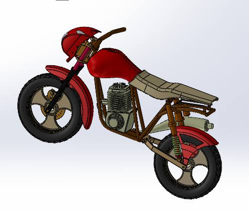
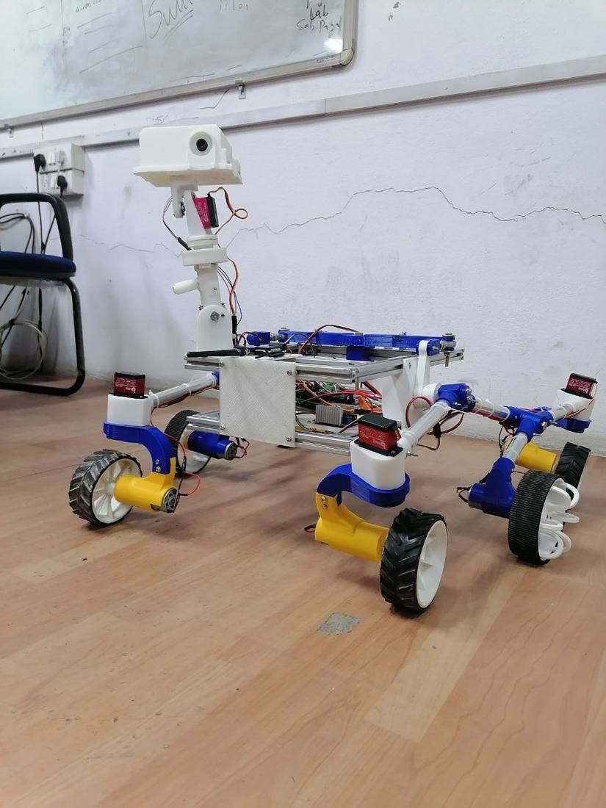
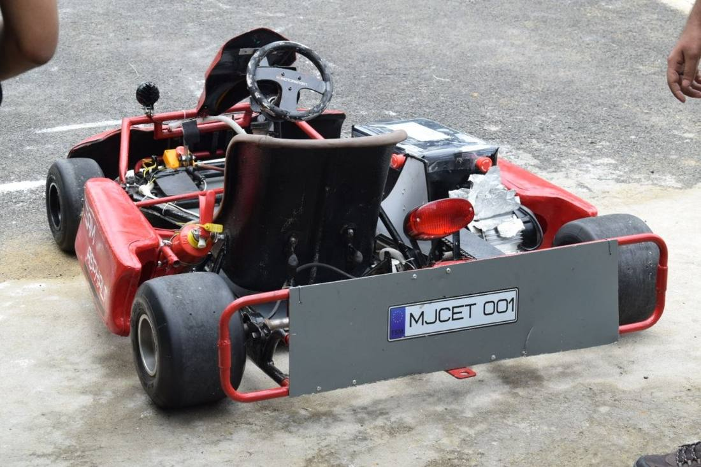
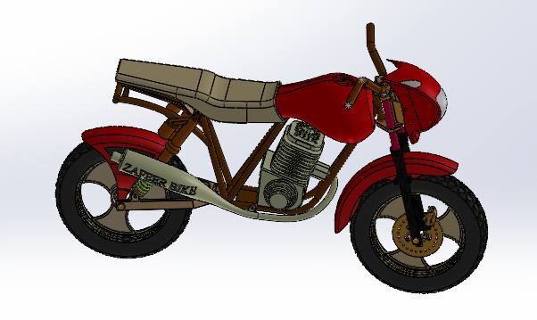

01 / MECHANICAL DESIGN
Motorcycle assembly
Thirty components. One complete assembly. Designed part by part, documented drawing by drawing.
30unique components
Explore project ↗ZAFEER AHMED QADEER / M.S. MECHANICAL ENGINEERING
JERSEY CITY, NJMechanical design. Manufacturing. Motion.
I connect the model on the screen to the thing that gets built.
Open to full-time engineering roles

Frame / WeldmentsStructural members form the motorcycle frame. Explore how the component geometry comes together in the complete assembly.
Read the design study ↗SELECTED WORK / 01–05
One tooth. One project.
Scroll to the next chapter.
01 / MECHANICAL DESIGN
Thirty components. One complete assembly. Designed part by part, documented drawing by drawing.
02 / BUILD & TEST
A stair-climbing robot pushed beyond its working limit. Four test conditions. A design investigation shaped by what actually happened.

03 / SIMULATION
Five fluid and heat-transfer studies, paired with analytical calculations. The solver is only one part of the answer.

04 / MECHATRONICS
A rocker-bogie chassis, printed joints and a real working rover. Mechanical design inside a multidisciplinary build.

05 / DESIGN LEADERSHIP
Leading SAE Team Asphalt from design and fabrication to testing and competition.

THE FULL COLLECTION
Eight projects. Different constraints.
The same curiosity.
Thirty components. One complete assembly. Designed part by part, documented drawing by drawing.
30 / unique components ↗02 / BUILD & TESTA stair-climbing robot pushed beyond its working limit. Four test conditions. A design investigation shaped by what actually happened.
04 / stair-rise conditions ↗03 / SIMULATIONFive fluid and heat-transfer studies, paired with analytical calculations. The solver is only one part of the answer.
05 / analytical comparisons ↗04 / MECHATRONICSA rocker-bogie chassis, printed joints and a real working rover. Mechanical design inside a multidisciplinary build.
06 / wheels / one integrated system ↗05 / DESIGN LEADERSHIPLeading SAE Team Asphalt from design and fabrication to testing and competition.
2nd / nationally / SAE IPEC 2K23 ↗06 / THERMAL SYSTEMSCSP with multi-effect distillation: a thermal design and financial modelling study.
Concept / thermal and financial model ↗07 / PERSONAL BUILDA custom FDM printer assembled, aligned, configured and debugged from individual components.
FDM / electromechanical build ↗08 / ADDITIVE MANUFACTURINGA 20-part vehicle with a three-stage gear train, developed through three print iterations.
03 / print iterations ↗INSIDE THE ENGINEERING
Choose a stage.
See the evidence behind it.
The assembly connects individual components through a complete CAD model and manufacturing drawings.
30 parts / 3 subassemblies / 30 drawings
Explore the evidence ↗
Analytical calculations sit alongside the simulation. The comparison matters as much as the image.
Five studies / Analytical comparisons
Explore the evidence ↗Aluminium profile, printed joints and a rocker-bogie chassis bring the mechanical design into a working rover.
CAD / FDM joints / Physical integration
Explore the evidence ↗The test matrix records stable climbs, slipping and failure across four stair heights. Those observations guide the next questions.
Four conditions / Observed climbing behaviour
Explore the evidence ↗EXPERIENCE
THE PERSON BEHIND THE PARTS
I completed my M.S. in Mechanical Engineering at NYU Tandon in May 2026. My work spans mechanical design, manufacturing, electromechanical integration and simulation.
I’m drawn to the handoff between a model that works on screen and a product that can actually be built. I’ve co-founded a robotics company, led student engineering teams, and built projects from individual components.
I’m looking for a role where I can stay close to both design decisions and the physical build.
SolidWorks (CSWA) · CATIA · AutoCAD · AutoCAD MEP · Fusion 360 · Revit · large assembly modelling · surfacing · weldments · sheet metal · detail drafting with section and detail views · GD&T (ASME Y14.5) · tolerance stack-up
Injection moulding · die casting · blow and rotational moulding · CNC machining · sheet metal forming · additive manufacturing (FDM/SLA) · production tooling and fixtures · draft and wall thickness feasibility · DFM / DFA / DFMEA · bill of materials
ANSYS structural and thermal FEA · SolidWorks Flow Simulation (CFD, certified) · heat transfer · thermodynamics · fluid mechanics · statics and free-body analysis · tolerance analysis · MATLAB
Assembly line process mapping · takt time and material flow · station-level quality gates · root cause analysis (5-why, fishbone) · FMEA · statistical process control · dimensional and in-process inspection · design of experiments · ISO 9001 environments
Sensor and electronics integration · motors, drivers and actuators · wire harness routing · box build assembly · enclosure and chassis design · Arduino · firmware configuration and hardware bring-up · acceptance testing
Design reviews · engineering change notices · supplier and vendor coordination · site surveys and commissioning walkthroughs · technical documentation and reporting · Microsoft Excel, Word and PowerPoint · C / C++ basics
Selected coursework: CFD & Heat Transfer (A) · New Product Development (A) · Additive Manufacturing of Metallic Materials (A) · Thermal Engineering Fundamentals (A) · Energy Project Financing (A) · Design for Manufacturing (A) · Mechanics of Materials (A) · Fluid Mechanics (A)